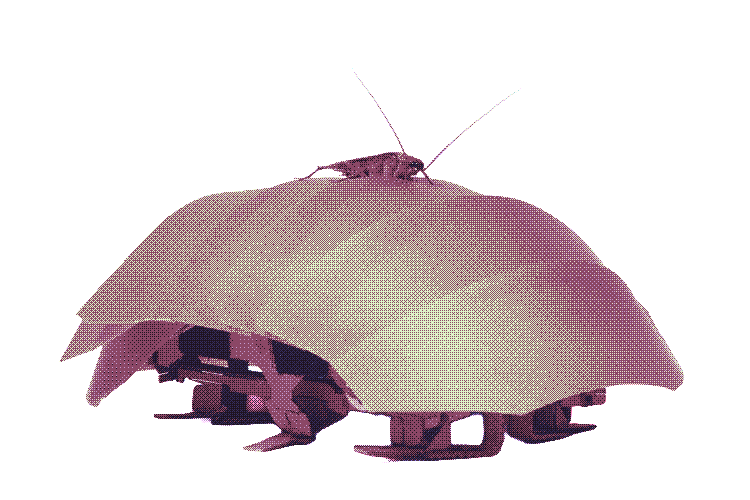
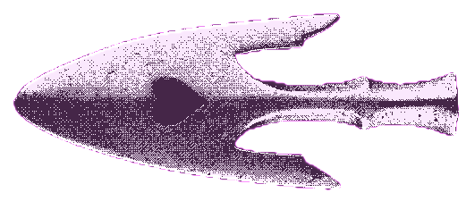

Ce robot est inspiré des capacités de déplacement et de survie des CAFARDS. Ils sont connus pour être extrêmement résistants, rapides et ont la capacité de s’introduire avec facilité dans des espaces réduits.
Et en effet, c’est leur exosquelette flexible qui le leur permet.
Le projet est né à l’université de Californie à Berkeley aux États-Unis et a été financé par l’armée américaine.
Il s’agit de la mise au point d'un robot miniature étant capable de se compresser et de se faufiler dans des espaces réduits qui servirait à explorer sous chutes de pierres après un séisme par exemple. L’objectif serait donc de localiser des victimes ensevelies sous les décombres et venir en aide aux populations touchées par des catastrophes naturelles.

Ce projet pourrait sauver des vies tout en s'inspirant des cafards au lieu de seulement les voir en tant que nuisibles.
Mais encore une fois, ce projet est encore en cours de développement et n’est pas assez concret pour que l’on puisse commencer à s’en servir.
